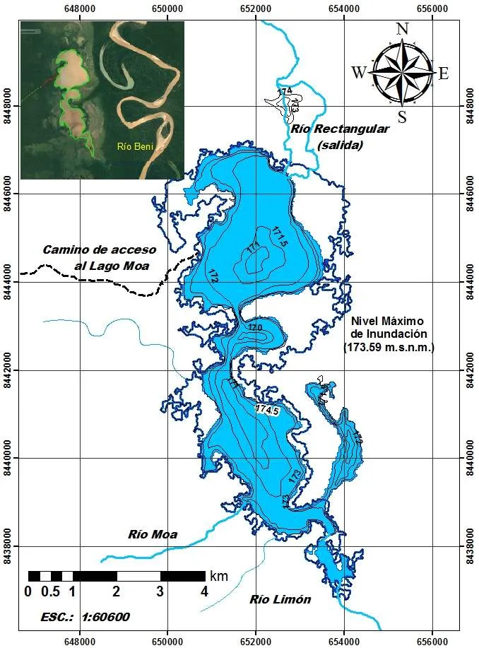
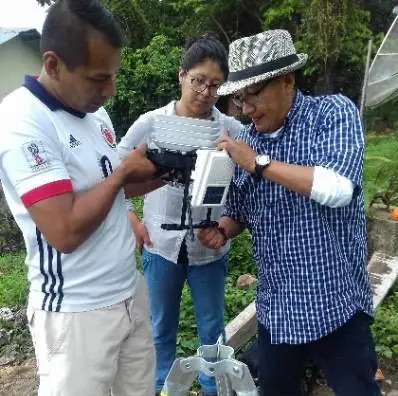

Monitoreo climático
Instalación de estaciones meteorológicas para medir precipitación, radiación y balance hídrico en la cuenca.
Respaldo académico
Un proyecto sustentado por la Facultad de Ingeniería y el Instituto de Ecología de la Universidad Mayor de San Andrés (UMSA) en cooperación con ASDI Suecia.
Instalación de estaciones meteorológicas para medir precipitación, radiación y balance hídrico en la cuenca.
Ecosondas de alta resolución para determinar la profundidad y perfiles de fondo del segundo lago más grande de La Paz.
Estudios técnicos para infraestructura de regulación que asegure agua limpia para las comunidades tacanas todo el año.
Plataforma para que estudiantes e investigadores de Bolivia y el mundo realicen tesis y pasantías de campo en el Madidi.

